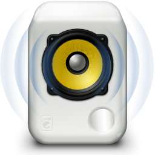

Ya os expliqué como crear tu servidor dlna en raspberry o servidor Linux y como crear listas en m3u para el servidor, ahora tocaría el poder utilizar un cliente dlna en tu escritorio. Tenemos muchas aplicaciones para movil, smart TV,… pero, ¿Para escritorio?, no tendría sentido el montar un servidor multimedia solo para movil, tabletas y Tv. La verdad, es que escasean para escritorio, pero gracias a aplicaciones como Rhythmbox y sus plugins, podemos utilizar dlna de un modo muy sencillo. Aquí os explico como hacerlo:
sudo apt install rhythmbox
Una vez instalado, en los menús, accederemos a: Herramientas -> Complementos, habilitaremos marcando el checklist: Explorador de medios Grilo
Buscamos los plugins de Grilo en nuestra distro:
sudo apt search grilo-plugins
En Ubuntu 18.04, nos aparece grilo-plugins-0.3, dependerá la versión de que distro tengamos instalada. Instala la que tengas:
sudo apt install grilo-plugins-0.3
Ahora si abrimos Rhythmbox, tendría que aparecer nuestro servidor.
Para los que utilizamos VLC y no nos apetece el instalar o utilizar Rhythmbox, sigue los siguientes pasos:
Publicado por Angel el sábado 16 febrero del 2019
También te puede interesar:
Powered by org-bash-blog
Writing in orgmode whith emacs

Este obra está bajo una licencia de Creative Commons Reconocimiento-NoComercial-CompartirIgual 4.0 Internacional.